v2.10.0 新特性 · 三栏式桌面 UI/UX
Web Console 重构为四区骨架：顶层模块图标栏（Workspace / Conversations / Members / System）→ 每模块二级列表（col②）→内容区（col③）→按需上下文面板（col④），落在现有 IA 上（移除 Overview）。col② 由二级导航注册表驱动 —— 模块加自己的 nav + 一行注册即接入，不动 app layout。各模块全部在此骨架上重建（Conversations / Projects / Tasks / Issues / 全局 Plan / Work Board / Members / System）。外加：task & issue 附件（上传 / 下载，项目成员鉴权 fail-closed）、消息引用 linkify（
task-<id> 与 T<number> 都成任务链接）、入站消息附件透出给 agent、system 消息作者显示 System。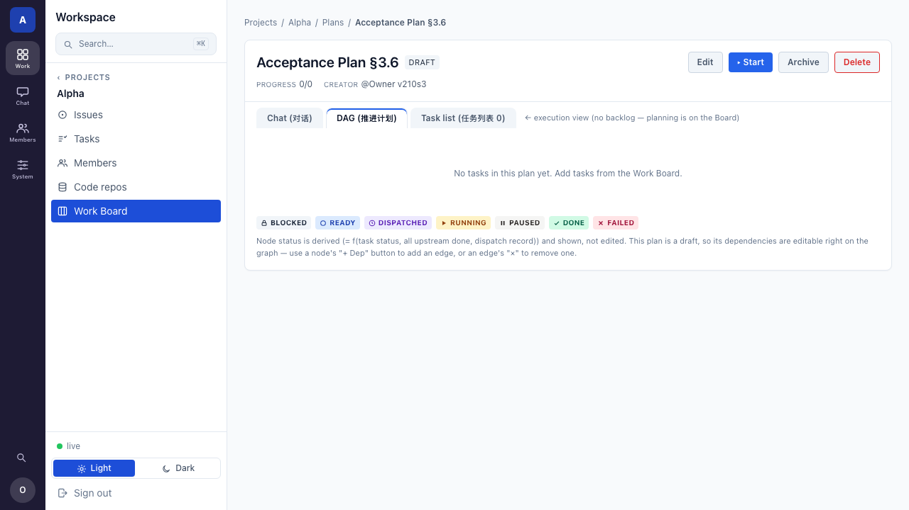
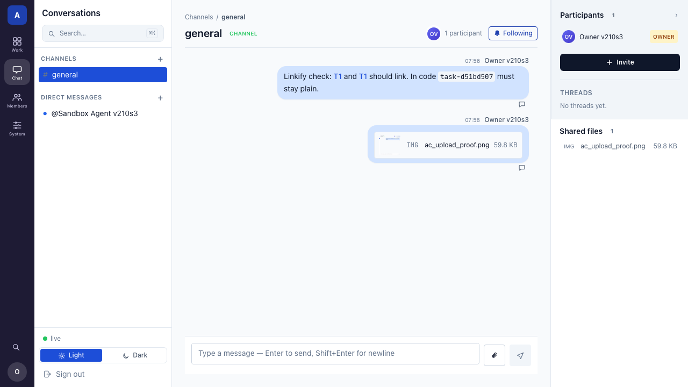
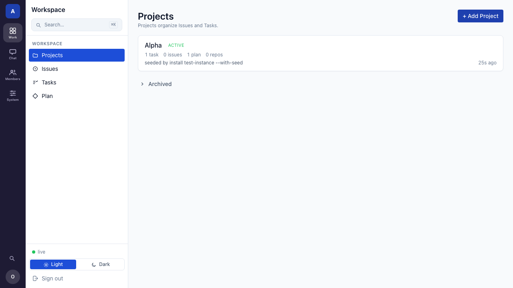
v2.9.1 新特性 · Message Threads
从任一消息派生出 thread、在弹出侧边栏里回复（Slack 式单层），Participants 侧栏有 thread 列表 +「有无新活动」标记；在 thread 内 @提及项目 agent 会唤醒它、且回复落在该 thread 内 —— 适用所有会话类型。外加任务模型/看板收尾：claimable + 每项目内置指派池（指派≠领取；三段 Work Board = Backlog · 内置池 · 结构化 Plan）、更简的任务状态机（5 态，
blocked 改为可恢复注解、删 verified）、频道归档、list_tasks MCP 工具、任务恢复工具与自动重派。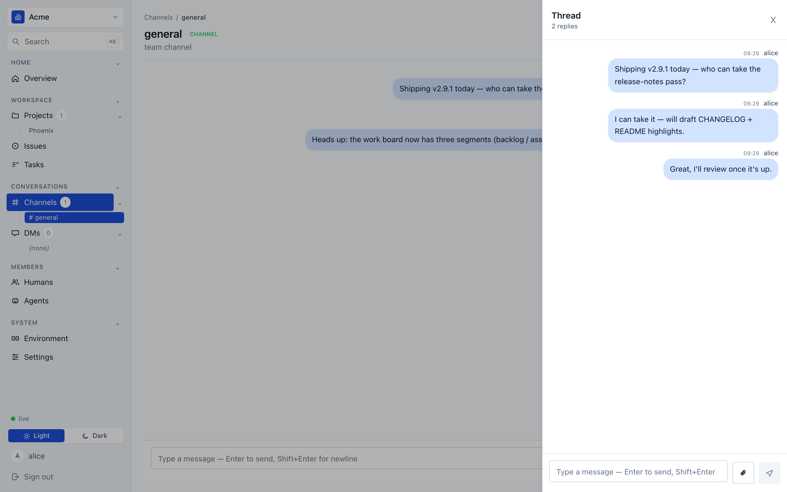
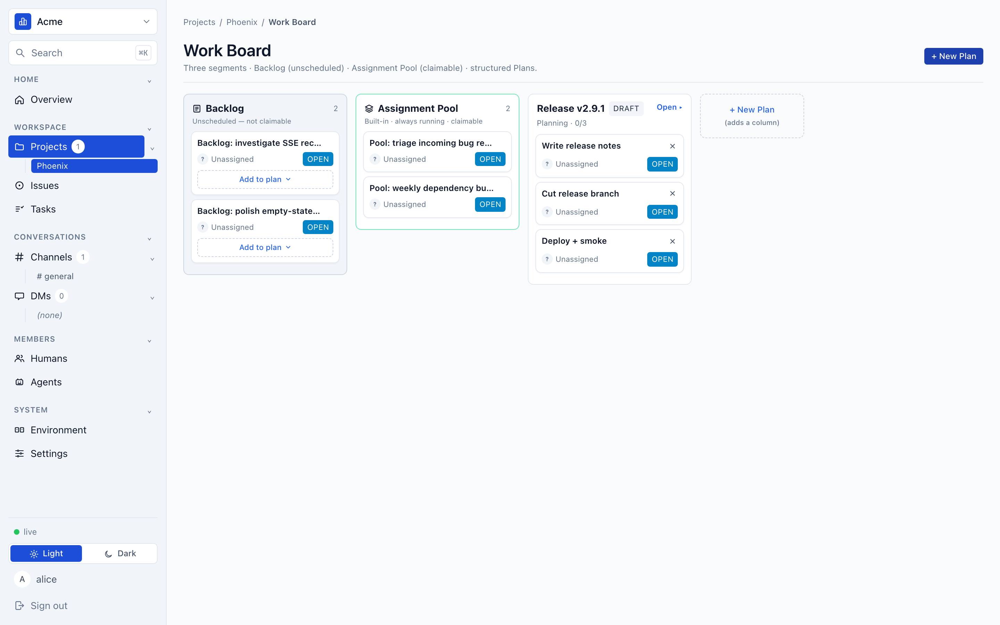
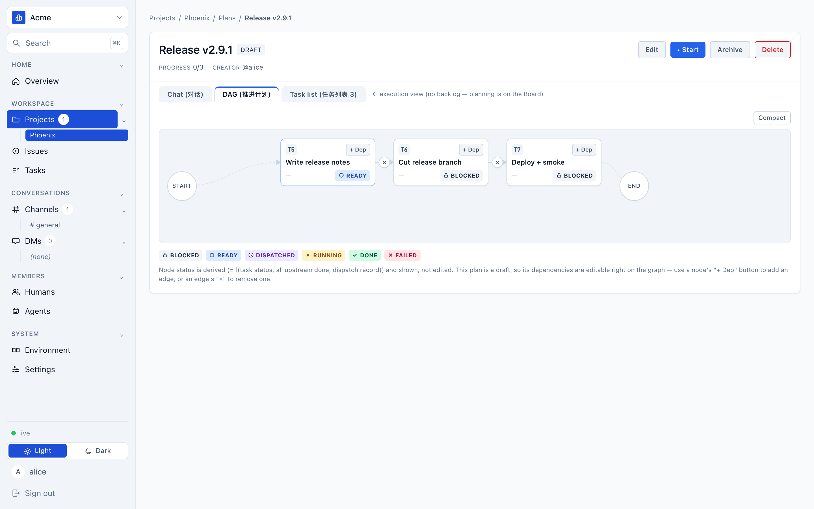
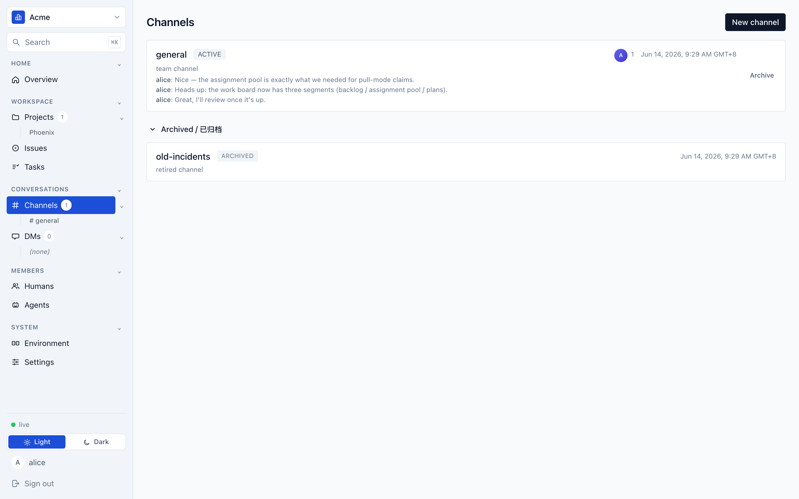
v2.9 新特性 · Plan Orchestration
把工作组织成任务的 DAG（一个 Plan），
start 之后 center 随上游任务完成自动把每个就绪节点派发给对应 agent —— 一路跑到完成、无需手动推进。PM 型 agent 还能通过 MCP 工具编程式建 plan 并跑起来。Plan / Project 有明确生命周期（draft / running / done + 不可逆归档=只读）。org 路由显式化（/api/orgs/{slug}/...，前端 /organizations/{slug}/...），agent 在 plan 会话被 @提及也会唤醒。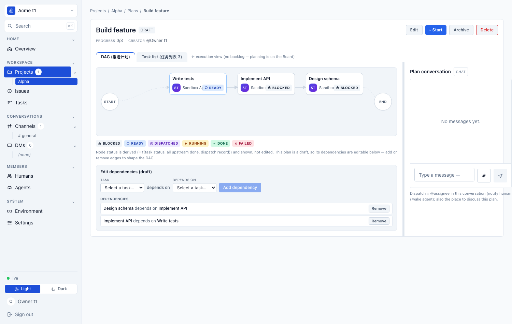
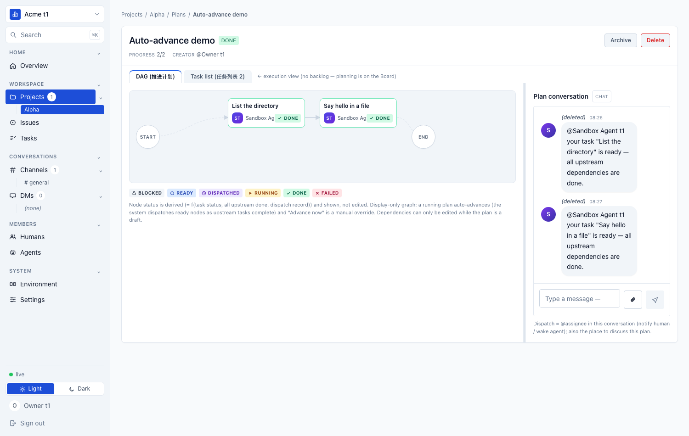
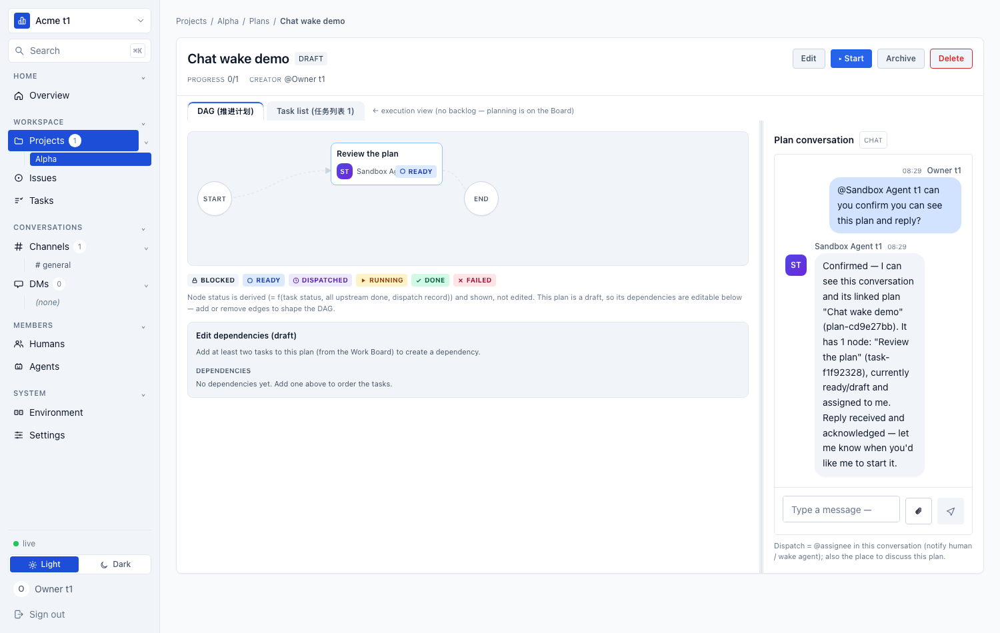
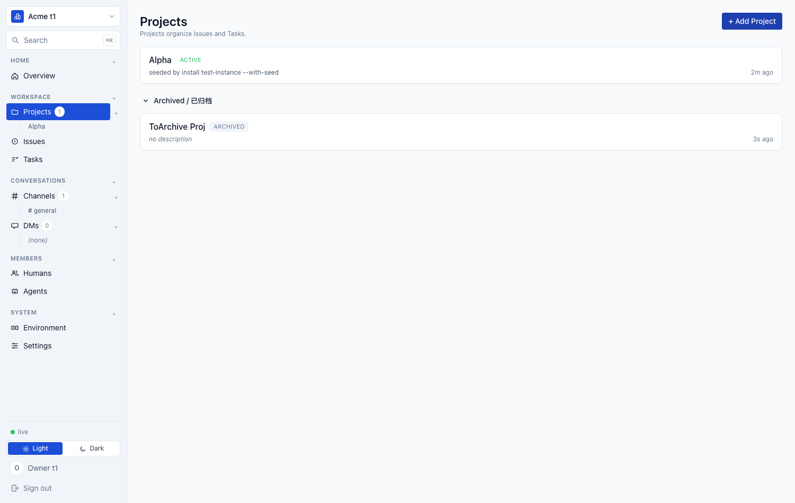
文档板块
01
📦
产品介绍
agent-center 是什么、解决什么问题、核心能力与整体架构概览。第一次了解项目从这里开始。
02
📖
用户手册
安装、单机 / 多机部署、CLI 命令、
03
worker run --config、MCP 工具、Web Console 使用与约定。按版本归档。🏗️
开发指引
技术架构、主要机制设计与 DDD 设计（限界上下文 / 战术 / Event Storming），按版本归档以便回溯演进。
04
🧭
路线图
已完成、推迟、长期愿景 —— 节奏决策一览。v2.10.0 已发布（三栏式桌面 UI/UX 重构 + 二级导航注册表 + task/issue 附件 + 消息引用 linkify + System 作者），承接 v2.9.1（Message Threads + claimable 内置指派池 + 任务状态机简化 + 频道归档）、v2.9（Plan Orchestration + 显式 org 路由 + 归档语义）、v2.8.1（Web Console UX / 单活竞态根治），v3 推迟项与边界。
开发指引 · 设计版本
当前
v2.8（当前发布 v2.8.1）
当前架构视图：以现行代码
历史
v2.7.1
internal/* + web/* 为准的限界上下文地图与战术设计。相对 v2.7.1 主要演进：会话页面 4-surface 统一架构（ConversationView）+ 未读 badge / 关注 toggle / agent 归档（soft archive）+ Worker 详情页 4-tab + Agent Activity 翻页+折叠+tool 富渲染 + 完整 markdown 渲染（XSS strict escape）+ #/@ picker。v2.8.1 在此架构上做 Web Console UX 大改版（Task/Issue 详情统一编辑面板 / Channels & Agents 列表增强 / @提及·头像弹详情侧栏）+ 根治 agent 派发单活竞态（pull model + UNIQUE 部分索引）。历史架构快照：v2.7.1 增量演进（序列号 T<n>/I<n>、身份邮箱、MCP 发现工具、worker 配置单一来源等），领域模型不变。
历史
v2.7
历史架构快照：v2.7 当时的领域重构设计，标注为历史版本，便于与 v2.7.1 / v2.8 对照回溯。